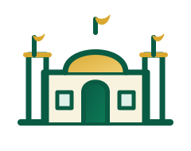

سؤال اليومتحدٍ ديني يومي
سؤال اليوم
جارٍ تجهيز سؤال اليوم...
سؤال جديد كل يوم من القرآن والحديث والسيرة والعبادات والمعلومات الإسلامية.
اختر إجابة واحدة، وستظهر لك الإجابة الصحيحة مع شرح مختصر.

موقع إسلامي شامل — قرآن كريم، أذكار، أدعية، أحاديث صحيحة، ورد يومي ومواقيت الصلاة
سؤال جديد كل يوم من القرآن والحديث والسيرة والعبادات والمعلومات الإسلامية.
اللهم اجعل كل آية تُقرأ، وكل ذكر ودعاء وعلم نافع في ميزان حسناته، وانفع بهذا العمل المسلمين.

خمس خطوات خفيفة تجمع القراءة والذكر والعلم والعمل الصالح.
الأذكار، الأدعية، الأحاديث، الموسوعة، الحكم والمواعظ.
آخر موضع قراءة محفوظ
5 أو 10 أسئلة مع النتيجة والتفسير.
دعاء مناسب للحالة التي تمر بها.
تابع ذكرك وورد القرآن.
وصول سريع إلى أكثر ما يحتاجه المسلم خلال يومه، بدون تسجيل دخول.
افتح قسم الصلاة لاختيار مدينتك ومعرفة الصلاة القادمة.
اختر طريقة القراءة التي تناسبك: صفحة من صفحات المصحف، سورة كاملة في شاشة واحدة، أو جزء كامل. ويمكنك التنقل السابق/التالي داخل نفس النوع.
تابع قراءتك بالصفحات؛ التقدم محفوظ على هذا الجهاز فقط.
كلما فتحت صفحة في المصحف يحفظ الموقع آخر صفحة تلقائيًا.
أذكار الصباح والمساء ومواقف اليوم، مع عدد التكرار وعداد مستقل لكل ذكر.
أدعية من القرآن والسنة ومأثورات صحيحة المعنى، مع أقسام للنفس والوالدين والمتوفى والفرج والرزق.
مختارات قصيرة مع مرجع الحديث. الهدف التذكير والانتفاع، وليس استبدال كتب السنة وشروحها.
تعريف مختصر بالعشرة الذين جمعهم حديث البشارة بالجنة، ومعهم نساء وردت لهن بشارات صحيحة خاصة. المحتوى للتعريف المختصر مع ذكر المرجع.
بطاقات تعريفية بالأنبياء الذين وردت أسماؤهم في القرآن، والقوم أو الجهة التي وردت دعوتهم إليها عندما يذكر القرآن ذلك بوضوح.
موسوعة واسعة ومبسطة عن القرآن وأسماء سوره وقصصه، وأمهات المؤمنين وأسرة النبي ﷺ والصحابة، والسيرة والهجرة والمساجد والخلفاء والفتوحات الإسلامية.
آيات وأحاديث صحيحة، ودروس مستفادة من سير الأنبياء والصحابة ووصايا لقمان، وحكم تربوية عملية للحياة اليومية.
آيات وأدعية مأثورة تُقرأ بنية الاستشفاء والافتقار إلى الله، مع الأخذ بالأسباب الطبية عند الحاجة.
تعلّم الأسماء الحسنى وتدبر معانيها، مع بحث سريع وحفظ الاسم للمراجعة اليومية.
قائمة عملية صغيرة تساعدك على المحافظة على وردك اليومي. تُصفّر تلقائيًا مع بداية يوم جديد على جهازك.
مسابقة تعليمية من القرآن والسيرة والأنبياء والحديث والمعلومات الإسلامية، مع تصحيح وشرح فوري.
اختر حالتك لتصل بسرعة إلى دعاء مأثور مناسب، مع بيان المصدر حيث يتوفر.
حدد أهدافًا بسيطة لذكرك وقراءتك، وتابع تقدمك على هذا الجهاز.
سؤال واحد جديد كل يوم في القرآن والحديث والسيرة والعبادات والمعلومات الإسلامية العامة. النتيجة محفوظة على هذا الجهاز لليوم الحالي.
كل ما تحفظه من آيات وأذكار وأدعية وأحاديث يظهر هنا على هذا الجهاز.
العداد يُحفظ تلقائيًا على جهازك.
اختر محافظتك/مدينتك المصرية. الحساب بطريقة الهيئة المصرية العامة للمساحة عبر AlAdhan.
تذكيرات عملية قصيرة تساعد على دوام الطاعة وحسن الخلق.
رَبَّنَا اغْفِرْ لَنَا وَلِإِخْوَانِنَا الَّذِينَ سَبَقُونَا بِالْإِيمَانِ
هذا الموقع أُنشئ بنية الصدقة الجارية، وهو مفتوح لكل الناس بلا تسجيل أو مقابل. نسأل الله أن ينفع به، وأن يجعل كل قراءة وذكر ودعاء وعلم نافع فيه في ميزان حسناته.
اللهم اغفر لسامي كمال عبده مصطفي وارحمه رحمةً واسعة، ونوّر قبره، وآنس وحشته، واجعل قبره روضةً من رياض الجنة.
اللهم اجزه عن الإحسان إحسانًا، وعن الإساءة عفوًا وغفرانًا، وأكرم نزله ووسّع مدخله، واجمعنا به في جنات النعيم.
اللهم ارفع درجته في المهديين، واخلفه في عقبه في الغابرين، واغفر لنا وله يا رب العالمين.